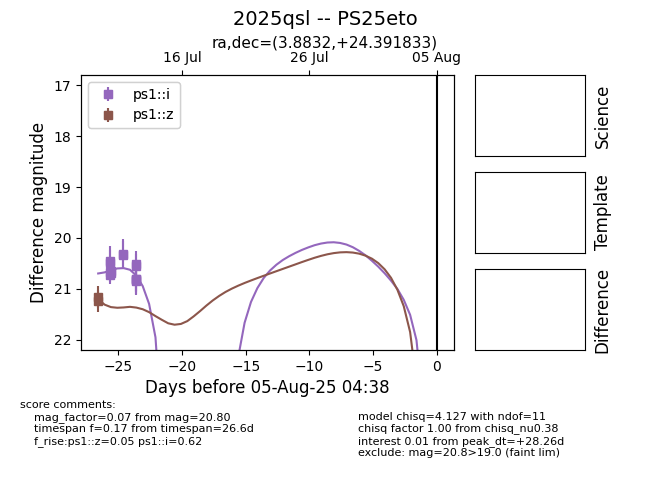

Target 2025qsl at 2025-08-05 04:38, see:
TNS: wis-tns.org/object/2025qsl
YSE: ziggy.ucolick.org/yse/transient_detail/2025qsl
alt names
2025qsl (yse,tns)
PS25eto (panstarrs)
coordinates:
equatorial (ra, dec) = (3.8832,+24.39183)
galactic (l, b) = (112.5777,-37.75697)
photometry
last ps1::i=20.80, ps1::z=21.24
14 ps1::i, 2 ps1::z detections
